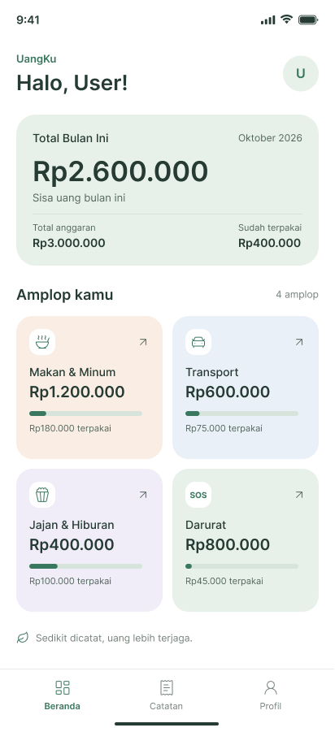
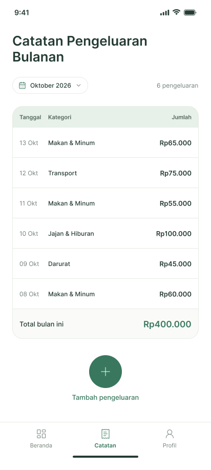

Makan dan Minum
0%Rp1.200.000
Rp180.000 terpakai : Untuk makan enak setiap hari.
Edisi 01 : Keuangan yang tenang
UangKu membagi gajimu ke amplop digital seperti Makan dan Minum, Transport, dan Darurat. Catat dalam dua ketukan, sisa uang terlihat jelas.


Halo, User: 4 amplop aktif bulan ini
Manifesto
01 : Amplop
Bukan sekadar kategori. Setiap amplop adalah janji kecil: uang makan tidak dipakai untuk jajan, uang darurat tidak tersentuh kecuali perlu.
Detail amplop : sisa Rp1.020.000 dari Rp1.200.000, Rp180.000 sudah terpakai.
Rp1.200.000
Rp180.000 terpakai : Untuk makan enak setiap hari.
Rp600.000
Rp75.000 terpakai : Bensin, parkir, dan ojek.
Rp400.000
Rp100.000 terpakai : Ruang senang yang tetap dijaga.
Rp800.000
Rp45.000 terpakai : Disentuh hanya saat perlu.
Warna setiap amplop sama persis dengan warna di aplikasi, jadi matamu langsung hafal.
02 : Fitur
Enam fitur inti yang saling terhubung. Atur di awal bulan, catat setiap hari, pantau kapan saja.
Klik baris untuk membuka detail. Jumlah fitur tampil: 6 dari 6.
Coba langsung di simulasi ↓Pecah gaji ke amplop sesuai porsimu. Setiap rupiah punya alamat, jadi tidak ada pengeluaran tanpa rencana.
4 amplop default, bisa tambah sendiriTotal anggaran, uang terpakai, dan sisa bulan ini dihitung ulang setiap kamu mencatat. Tidak perlu spreadsheet.
Sinkron antar amplop dan berandaPilih amplop, tulis nominal, simpan. Riwayat tersusun rapi per tanggal lengkap dengan total bulan berjalan.
Rata-rata 2 detik per catatanNotifikasi sore hari yang menenangkan saat amplop menipis, bukan peringatan merah yang membuat cemas.
Bisa diatur jam dan nadanyaSetiap amplop menampilkan persen pemakaian dan sisa rupiah. Kamu tahu kapan harus rem dan kapan masih aman.
Persentase diperbarui detik itu jugaData tersimpan di perangkatmu dan terenkripsi. Bekerja offline, bisa dihapus permanen kapan saja.
Tanpa iklan, tanpa pelacakan03 : Catatan
Tidak perlu buku besar. Pilih tanggal, pilih amplop, tulis nominal. Tabel tersusun rapi seperti halaman jurnal, lengkap dengan total bulan berjalan.

Sela : Simulasi
Mainkan gaji dan porsi amplopmu. Angka dan bar bergerak mengikuti jarimu, persis seperti di aplikasi.
Porsi seimbang. Darurat di atas 20%, tanggal tua aman.
Total 100% : pas satu gaji.
04 : Cara kerja
Saat gajian masuk, pecah ke amplop sesuai porsimu. Total Rp3.000.000 langsung punya alamat.
Jajan kopi Rp65.000, tambah ke amplop Makan dan Minum. Sisa berubah saat itu juga.
Beranda selalu menjawab satu pertanyaan: bulan ini masih aman atau harus rem.
Tampilan
Satu bahasa visual dari ikon sampai landing page: hijau pinus yang tenang, krem yang hangat, dan tipografi yang tidak berteriak. Arahkan kursor untuk melihat tiap layar lebih dekat.
05 : Cerita
Cerita dari empat pengguna dengan gaji dan gaya hidup berbeda. Geser sendiri atau biarkan berjalan otomatis.
06 : FAQ
Ini yang paling sering masuk. Klik untuk membuka jawabannya.
Masih penasaran? Tulis ke halo@uangku.id, dibalas manusia, bukan bot.
Ya. Semua fitur inti gratis selamanya dan tanpa iklan. Tidak ada paywall untuk catat dan amplop.
Data tersimpan di perangkatmu dan terenkripsi. Kamu bisa hapus kapan saja tanpa jejak di server kami.
Kami memakai metode amplop yang konkret: uang dibagi di awal, bukan dievaluasi di akhir. Jadi rem terasa sebelum kehabisan.
Cocok. Kamu bisa ubah total anggaran tiap bulan dan porsi tiap amplop mengikuti pemasukan.
Bisa. Semua pencatatan berjalan offline dan tersimpan lokal. Sinkronisasi hanya terjadi jika kamu mengaktifkannya.
Mulai dari satu bulan berjalan: masukkan total gaji, buat empat amplop, lalu catat seperti biasa. Riwayat lamamu tidak perlu dipindah.
Mulai hari ini
Unduh UangKu, buat amplop pertamamu dalam semenit, dan rasakan bedanya saat tanggal tua tiba.
Gratis : Ukuran ringan : Tanpa daftar panjang : ★ 4,9 dari 12.400 ulasan